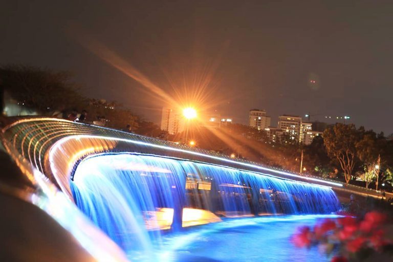
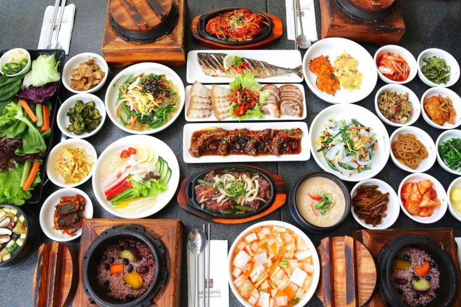

Thành phố không ngủ Hồ Chí Minh luôn có rất nhiều địa điểm vui chơi, giải trí nổi tiếng. Tọa lạc tại “khu nhà giàu quận 7”, Cầu Ánh Sao chính là biểu tượng cho sự hiện đại và đổi mới của thành phố mang tên bác. Cùng BookingHotel tìm hiểu thêm về địa điểm vui chơi này nhé.
Cầu Ánh Sao được xây dựng năm 2009 và là cây cầu bộ hành hiện đại đầu tiên của Việt Nam. Cầu được xây dựng bắc ngang qua rạch Thầy Tiêu, nối Khu Hồ Bán Nguyệt với Khu kênh Đào tạo thành một quần thể tham quan, vui chơi có quy mô lớn. Cây cầu này có chiều dài đến 170m và rộng khoảng 8.3m, nhờ vậy mà cầu Ánh Sao có thể chứa được rất nhiều lượt khách tham quan.
Ngay khi vừa khánh thành, cầu Ánh Sao đã trở thành địa điểm hò hẹn lý tưởng cho các cặp đôi bởi không gian lãng mạn. Nhờ những ánh đèn led phát sáng nằm rải rác trên mặt cầu mà cây cầu đã được đăt tên gọi là cầu Ánh Sao. Ngoài ra, hai bên thành cầu cũng được thiết kế dãy đèn led 7 màu vô cùng nổi bật kết hợp với nhiều vòi phun nước mới lạ.
Vào năm 2013, Hội Nghị Cầu Đường Quốc tế (IBC) đã trao Huân chương Arthur G.Hayden cho kiến trúc độc đáo của cầu Ánh Sao. Cây cầu này cũng được Sở Văn hóa – Thể thao Du lịch thành phố Hồ Chí Minh bình chọn là 1 trong 100 địa điểm thú vị của thành phố.
Cầu Ánh Sao tọa lạc tại khu đô thị mới Phú Mỹ Hưng, Quận 7, TP. Hồ Chí Minh. Địa điểm này nằm cách trung tâm thành phố khoảng 18km nên bạn hoàn toàn có thể tham quan và về trong ngày cũng vô cùng thuận tiện. Bạn có thể chọn đi bằng xe bus hoặc xe máy đều được.
Nếu đi bằng xe máy hoặc xe ô tô, bạn có thể gửi xe ở bãi xe của cầu Ánh Sao nằm trên đường Trần Văn Trà, đối diện trường Cao đẳng CTIM. Hoặc bạn có thể gửi ở Crescent Mall để không bị chặt chém nhé, nhưng gửi xe ở đây thì bạn sẽ phải đi bộ hơi xa để đến được cầu Ánh Sao.
Hệ thống đèn và vòi phun nước được thiết kế 2 bên thành cầu chính là điểm độc đáo và thu hút du khách của cây cầu này. Nhờ sử dụng pin năng lượng mặt trời mà những dải đèn này không gặp phải tình trạng hết pin giữa đêm khiến du khách hụt hẫng.
Để xem được trọn vẹn vẻ đẹp của cầu Ánh Sao lúc đèn nhấp nháy thay đổi thì bạn nên có mặt sau 17h vào các ngày thứ 5, thứ 6, thứ 7 và Chủ Nhật. Vào khoảng thời gian này thì bạn cũng có thể kết hợp ngắm hoàng hôn thơ mộng của Sài Gòn.
Cầu Ánh Sáng được thiết kế vô cùng độc đáo với khu vực bờ Đông (khu Hồ Bán Nguyệt) được mô phỏng hình mặt trời còn khu vực bờ Tây (khu Kênh Đào) là quảng trường mô phỏng hình mặt trăng. Đúng như tên gọi, hồ Bán Nguyệt có hình như nửa vầng trăng với mặt nước trong xanh và tĩnh lặng.
Thêm vào đó, nhờ diện tích cực khủng khoảng 22.000m2, khu vực này đã trở thành địa điểm tản bộ, tập thể dục quen thuộc của nhiều cư dân ở gần đó.
Khu vực quảng trường ở 2 bên đầu cầu cũng rất rộng rãi và được bố trí nhiều ghế đá để du khách ngồi nghỉ chân. Xung quanh quảng trường cũng có rất bãi cỏ xanh mướt và cây xanh đổ bóng. Bạn có thể nghỉ ngơi sau khi tham quan hoặc tổ chức các buổi cắm trại với bạn bè, người thân.
Hãy lưu ý rằng bạn không thể nướng thịt tại đây nên hay chuẩn các món ăn nhẹ như: bánh sandwich, trái cây, nước ép, bánh kem, snack, các loại viên chiên,… Khoảng thời gian thích hợp để đến đây cắm trại là khoảng 16h chiều, rồi bạn có thể đợi đến lúc cầu Ánh Sao lên đèn để tham quan.
Với không gian lãng mạn, cầu Ánh Sao được mệnh danh là địa điểm hẹn hò hoàn hảo. Khi thành phố lên đèn, cây cầu này cũng trở nên lung linh, huyền diệu và trở thành nơi tâm tình của nhiều cặp đôi.
Nắm tay nhau dạo bước trên cầu, tản bộ qua hồ bán nguyệt, đi dưới hàng cây xanh rợp bóng là những hoạt động sẽ mang đến cho bạn một buổi hẹn hò cực chill. Khi rời xa mạng xã hội, 2 bạn sẽ có cơ hội chia sẻ với nhau nhiều điều hơn.
Với phong cách thiết kế độc đáo, cầu Ánh Sao đã thu hút được rất nhiều bạn trẻ yêu thích chụp ảnh. Dù vào buổi sáng hay buổi tối, cây cầu này đều mang đến những tấm ảnh cực xinh. Địa điểm này thường được các cặp dâu – rể lựa chọn làm nơi chụp hình cưới vì là biểu tượng của Sài Gòn.
Buổi tối thì cây cầu này lại lung linh sắc màu và tràn đầy sức sống, phù hợp cho những bạn trẻ thích tìm kiếm những góc máy độc đáo. Ngoài ra, khu vực xung quanh cầu Ánh Sao là hồ Bán Nguyệt và Cresent Mall cũng được thiết kế rất đẹp mắt và phù hợp để “sống ảo”.
Đến với “khu nhà giàu quận 7” bạn chắc chắn không thể bỏ qua các món ăn Hàn Quốc chuẩn vị rồi. Khu vực xung quanh cầu Ánh Sao và khu Phú Mỹ Hưng nổi tiếng bởi những nhà hàng có chủ là người Hàn, nên các món ăn ở có hương vị không khác gì so với ở xứ sở kim chi và chủ yếu phục vụ người Hàn. Nếu bạn yêu thích ẩm thực Hàn Quốc thì hãy ghé đến đây nhé.
Ngoài ra, khu vực gần hồ Bán Nguyệt cũng có rất nhiều quán cafe để bạn có thể vừa trò chuyện vừa ngắm nhìn cầu ánh sao. Một số quán nổi bật là: Gongcha, Katinat, Highlands, Starbucks, Ccomaya Kids Cafe,…
Cầu Ánh Sao luôn là một trong những địa điểm vui chơi, hẹn hò nổi tiếng nhất tại Sài Gòn. Địa điểm này được xem là đại diện của sự phát triển tại của quận 7 nói riêng và thành phố Hồ Chí Minh nói chung. Bạn cũng có thể ở lại quận 7 để khám phá thêm nhiều địa điểm nổi tiếng khác. Mở ngay app BookingHotel để chọn phòng hợp gu nhé.